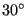
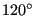

Next: *DAMPING Up: Input deck format Previous: *CYCLIC HARDENING Contents
Keyword type: model definition
This keyword is used to define
It must be preceded by two *SURFACE cards defining the nodes belonging to the left and right boundary of the sector and a *TIE card linking those surfaces. The axis of symmetry is defined by two points a and b, defined in global Cartesian coordinates.
For structural calculations there are five parameters, N, NGRAPH, TIE, ELSET and CHECK. The parameter N, specifying the number of sectors, is required, TIE is required if more than one cyclic symmetry tie is defined.
The parameter NGRAPH is optional and indicates for how many sectors the solutions should be stored in .frd format. Setting NGRAPH=N for N sectors stores the solution for the complete structure for subsequent plotting purposes. Default is NGRAPH=1. The rotational direction for the multiplication of the datum sector is from the dependent surface (slave) to the independent surface (master).
The parameter TIE specifies the name of the tie constraint to which the cyclic symmetry model definition applies. It need not be specified if only one *TIE card has been defined.
The element set specified by ELSET specifies the elements to which the parameter NGRAPH should be applied. Default if only one *TIE card was used is the complete model.
The last parameter, CHECK, specifies whether CalculiX should compare the sector angle based on its geometry with its value based on N. If the deviation exceeds 0.01 radians the program issues an error message and stops. If CHECK=NO is specified, the check is not performed, else it is. If the user wants to find eigenmodes with fractional nodal diameters, i.e. vibrations for which the phase shift is smaller than the sector angle, a value of N has to be specified which exceeds the number of sectors in the model. In that case the check should be turned off. Notice that in the case of the check being turned off the sector angle based on the geometry is still calculated for other purposes, it is just not compared to the sector angle based on the value of N.
Several *CYCLIC SYMMETRY MODEL cards within one input deck defining several cyclic symmetries within one and the same model are allowed. This, however, always is an approximation, since several cyclic symmetries within one model cannot really exist. Good results are only feasible if the values of N for the different *CYCLIC SYMMETRY MODEL cards do not deviate substantially.
The *CYCLIC SYMMETRY MODEL card triggers the creation of cyclic symmetry multiple point constraints between the slave and master side. If the nodes do not match on a one-to-one basis a slave node is connected to a master face. To this end the master side is triangulated. The resulting triangulation is stored in file TriMasterCyclicSymmetryModel.frd and can be viewed with CalculiX GraphiX.
For 3D-fluid calculations there are two parameters, N and TIE. The parameter N, specifying the number of sectors, is required for calculations with a rotational cyclic symmetry (FLUID CYCLIC parameter on the *TIEtie card). The parameter TIE is required for both calculations with rotational cyclic symmetry and translational cylic symmetry (FLUID PERIODIC parameter on the *TIE card). For 3D-fluid calculations the slave and master surface must consist of matching faces.
First line for all but fluid periodic calculations:
Second line for all but fluid periodic calculations:
First line for fluid periodic calculations:
Second line for fluid periodic calculations:
Example: *CYCLIC SYMMETRY MODEL, N=12, NGRAPH=3 0.,0.,0.,1.,0.,0.
defines a cyclic symmetric structure consisting of  sectors and axis of symmetry through the points (0.,0.,0.) and (1.,0.,0.). The solution will be stored for three connected sectors ().
Example files: segment, fullseg, couette1per, couettecyl4.